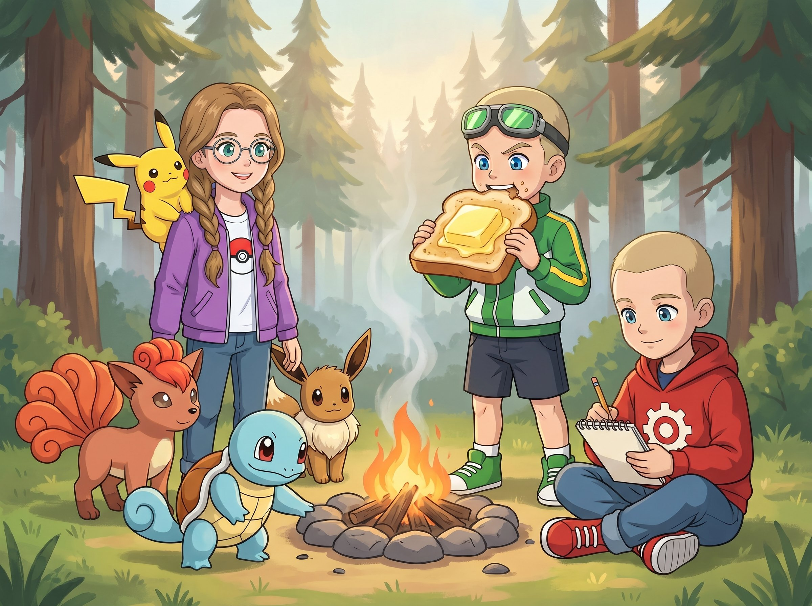
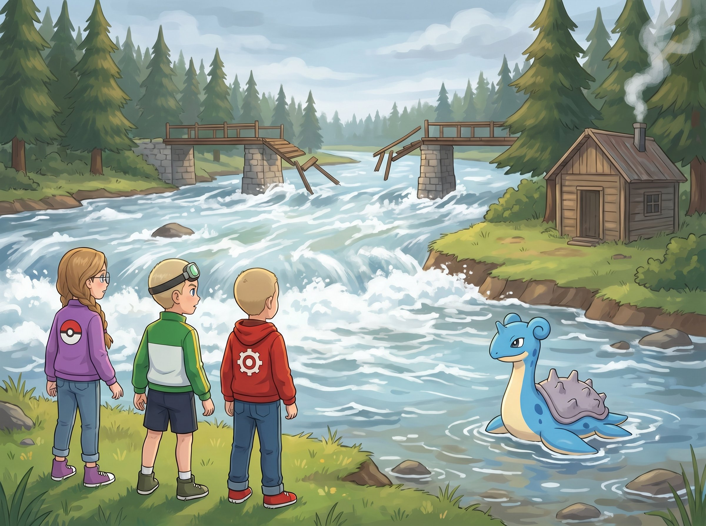
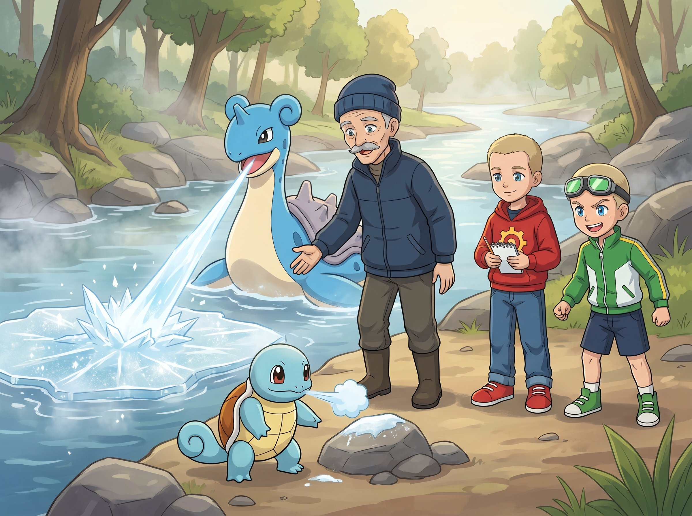
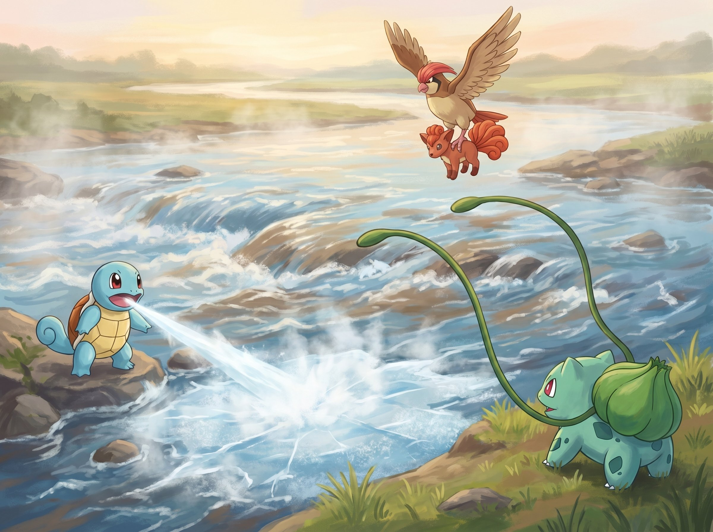
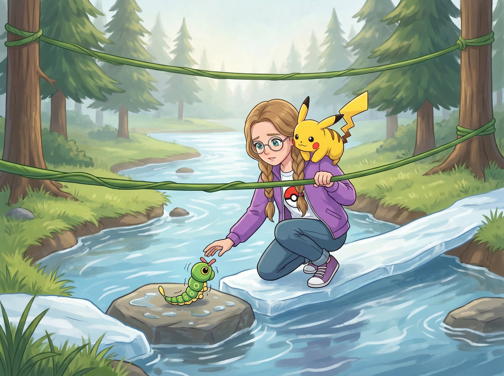
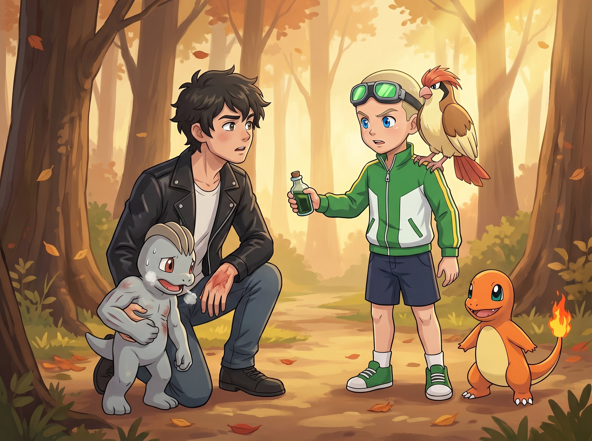
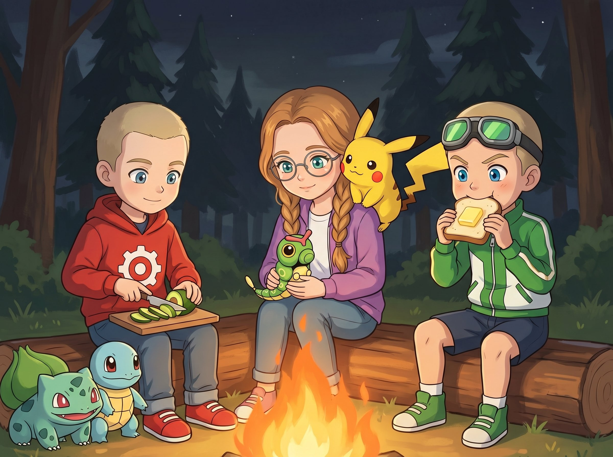

Сезон 1
Эпизод 8. «Речная переправа»

Утро после Тихих Крон начиналось тихо.
Костёр уже догорел, и от него тянулся тонкий дымок в светлеющее небо. Сквиртл (Squirtle) деловито окунал лапу в остывшую золу, проверял — не горячо ли. Каждый раз отдёргивал и смотрел на Ромуса с таким видом, будто докладывал: «Осмотр пройден. Дежурство сдано.»
— Спасибо, — Ромус не отрывался от блокнота. Красная худи с шестерёнкой была аккуратно застёгнута, карандаш двигался быстро. — Ты всегда такой ответственный?
— Сквир! — подтвердил Сквиртл с явной гордостью.
— Ромус, — Макстер откусил огромный кусок хлеба. Поверх хлеба лежал кусок масла толщиной в палец. — Что ты там рисуешь?
— Комбинации. Сквиртл и Бульбазавр вместе.
— Это как?
— Если атакуют одновременно — получится сильнее, чем по очереди. Water Pulse плюс Razor Leaf — лист летит через воду быстрее и точнее. — Ромус показал блокнот: маленькие схемы со стрелочками.
Макстер прищурился на страницу.
— Я вижу только стрелки.
— Стрелки — это направление.
— Я понимаю, что такое стрелки. Я не понимаю, зачем их пять.
— Это нормально, — Кристи поправила косички. Фиолетовая куртка была расстёгнута, Пикачу (Pikachu) сидел на плече и наблюдал за разговором с видом судьи-наблюдателя. — Ты ешь масло кусками. Стрелки тебе всё равно ничего не скажут.
— Пика, — согласился Пикачу.
— Эй!
Иви (Eevee) у ног Кристи аристократично потягивался. Сикстейлс (Vulpix) свернулась у его бока — шесть хвостов мягко шевелились во сне.
Собрались быстро. Бульбазавр (Bulbasaur) шёл впереди — самый серьёзный из всех, принюхивался к каждому пеньку. Пиджеотто (Pidgeotto) сидел на плече Макстера принципиально выше всех остальных — он уже считал, что так и должно быть.
Тропа шла через ельник, хвоя хрустела под ногами. Пахло смолой и чем-то сладковатым — первыми весенними грибами. Где-то вдалеке слышался шум — низкий, ровный, как будто работал большой вентилятор.
— Это река, — отозвался Ромус. — Близко.
— Перейдём и в обед уже в следующем городе! — Макстер подпрыгнул.
— Если мост цел.
— А почему он может быть нецел?
Ромус не ответил. Он остановился.
На тропе, под поваленной веткой, лежал маленький покемон. Серый, с длинным голым хвостом. Раттата (Rattata). Он дрожал и прижимал к земле правую переднюю лапу.
— Ой, — Кристи присела рядом. — Кажется, его придавило веткой.
Она аккуратно подняла ветку. Раттата пискнул, но не укусил — слишком обессилел.
— Лапа цела, — Кристи провела пальцем над его лапкой, не касаясь. — Но он голодный и испуганный. Ягода Оран бы помогла.
Ромус открыл рюкзак, достал синюю круглую ягоду. Протянул Кристи.
Макстер открыл рот.
— А если нам самим понадобится? — он почесал затылок.
— Он сейчас нужнее, — Кристи уже положила ягоду рядом с носом Раттаты.
Раттата понюхал. Потом — тихо, осторожно — взял ягоду.
Посмотрел на Кристи большими, чёрными, уставшими глазами. И убежал. Даже не оглянулся.
— Даже спасибо не сказал, — буркнул Макстер.
— А зачем? — Кристи пожала плечами. — Он же покемон.
— Ну… логично, — Макстер кивнул. — Покемоны в целом не всегда благодарят.
— Пика, — обиженно возразил Пикачу.
— Ты не в счёт! Ты всегда благодаришь. Я про покемонов вообще.
Пикачу повернулся в другую сторону. Демонстративно.
Они пошли дальше. Через двести метров тропа вдруг оборвалась — деревья расступились, и перед героями открылась река.

Широкая. Бурная. Вода шла с белыми бурунами, шум стоял такой, что приходилось немного повышать голос.
От одного берега к другому когда-то шёл мост — крепкий, деревянный, на сваях. Сейчас от него остались только две опоры посреди реки и свисающие обрывки досок. Средний пролёт унесло.
На этом берегу, у самой воды, стояла маленькая деревянная хижина. Покосившаяся, с дымком из трубы. А на берегу рядом — большой голубой покемон с длинной шеей и чёрным панцирем на спине. Он лежал в воде ровно, как лодка, и смотрел на реку спокойными тёмными глазами.
— Лапрас (Lapras), — выдохнула Кристи. — Водяной и ледяной тип. Живёт до двухсот лет. Редкий.
— Двухсот?! — Макстер округлил глаза. — Он что, знал моего прадедушку?
— Возможно, — Ромус пожал плечами. — Лапрасы помнят людей на сто лет назад.
Макстер посмотрел на Лапраса с новым уважением. Лапрас зевнул.
Дверь хижины скрипнула. На крыльцо вышел старик — худой, в синей вязаной шапке и тёплой куртке, серые усы, глаза из тех, что «ещё не забыли как быть острыми».
Он посмотрел на детей. На покемонов. На разрушенный мост.
— Опять его снесло, — отозвался старик спокойно. Как будто он и не надеялся, что мост переживёт эту весну.
— Здравствуйте, — Кристи сделала шаг вперёд. — Нам нужно перейти на тот берег.
Старик смерил её взглядом.
— Сегодня не перейдёте. Река злая.

Старик пригласил их в хижину. Внутри пахло сушёной рыбой, хвойной смолой и старыми книгами.
На стенах висели удочки, какие-то крючки, и одна очень аккуратная карта реки — от истока до моря. Карта была исчерчена тонкими линиями разных цветов: синими, красными, зелёными.
— Это что? — Ромус сразу подошёл к карте.
— Это весна, — старик показал на красные линии. — Это осень. Это лето. Я тридцать лет живу у этой реки. Знаю её.
— А зимой?
— Зимой её нет. Она подо льдом.
Макстер покрутил головой.
— Меня зовут Макстер, — заявил он. — Это Ромус. Это Кристи.
— Меня зовут Морис. А это мой Лапрас. Ему двадцать девять лет.
— Он старше нас всех вместе взятых, — Ромус.
— На двенадцать лет, — Морис кивнул.
— Э-э, — Макстер прищурился. — Мне десять. Значит…
— Макстер, — Кристи.
— Молчу.
Старик подвёл их к окну. За окном шумела река. Он показал на дальний склон — березы на холме.
— Смотрите на листья. Что они делают?
— Шевелятся, — Макстер.
— Как?
— Ну… туда-сюда.
— «Туда-сюда» — это не ответ, — старик покачал головой. Посмотрел на Ромуса. — А ты что видишь?
Ромус прищурился. Карандаш замер в руке.
— Они… поднимаются и опускаются волной. С верхушки вниз. Одинаково.
— Правильно. Значит, ветер ровный. Идёт сверху вниз по склону.
— А если бы они дрожали?
— Ветер переменный. Будет шторм.
Ромус посмотрел на другие деревья — ольху у берега, ели за хижиной.
— Подожди. Тут есть закономерность, — произнёс он тихо. — На берёзе листья идут волной, а на ольхе — почти не шевелятся.
— Ольха за холмом. Ветер её не цепляет — идёт полосой, а не пластом. Низкий ветер. Такой проходит. Час, полтора. Потом стихнет.
Макстер сунулся между ними.
— Я тоже хочу читать ветер! Где книга?
— Это метафора.
— Что такое метафора?
Ромус аккуратно прикрыл Макстеру рот ладонью.
— Позже объясню.
Через час, как Морис и Ромус предсказали, река действительно стала тише. Белые буруны опали, поток стал ровнее. Но вода всё ещё была мощной — брод казался опасным.
Морис посмотрел на Сквиртла долгим, внимательным взглядом.
— Твой, — обратился он к Ромусу. — Водник?
— Водник, — кивнул Ромус.
— Умеет холод делать?
— Нет. Только воду.
— Значит, пора. — Морис подозвал Лапраса. — Покажи.
Лапрас подплыл к мелководью, поднял голову и открыл пасть. Из неё вышел бело-голубой луч — тонкий, ровный, совершенно беззвучный. Луч коснулся воды — и на поверхности вспыхнула хрустящая корка льда. Как зеркало легло на рябь.
— Ого, — выдохнул Макстер.
— Ледяной луч (Ice Beam), — спокойно пояснил Морис. — У водных эта атака есть в резерве. Надо только разбудить.
Сквиртл смотрел на Лапраса во все глаза.
— Сквир! — восторженно.
— Попробуй, — Морис наклонился к нему. — Набери в грудь прохлады. Не воды — холода. Сильно. Дунь — как на горячий чай.
Сквиртл сосредоточился. Щёки надулись. Из пасти вышла короткая бело-голубая вспышка — сантиметров на тридцать. На камне рядом появилась белая отметина инея.
— Сквир?! — Сквиртл сам удивился.
— Получилось, — кивнул Морис. — Слабо. Но это твой первый раз. Через год — будет как у Лапраса.
Ромус записал в блокнот. Подчеркнул три раза.
Сквиртл отдышался, но выглядел уставшим — первый Ледяной луч выпил из него силы. Макстер, пока Ромус дописывал, отломил от своего завтрака — недоеденный кусок хлеба — и протянул Сквиртлу.
Как Кристи утром. Просто — дать. Без «за что».
— Сквир? — Сквиртл удивлённо моргнул. Посмотрел на хлеб. Потом на Макстера.
— Ну, ты первый раз заморозил воду, — Макстер пожал плечами. — Заслужил.
Сквиртл взял хлеб осторожно. Два глотка. Довольно фыркнул.
Кристи и Ромус не видели. Но Морис видел — посмотрел на Макстера долгим, внимательным взглядом, как смотрел на листья ольхи. Ничего не сказал.
Он зашёл в хижину. Вернулся через полминуты.
— Макстер. Возьми.
В ладони Мориса лежала маленькая стеклянная бутылочка с притёртой пробкой. Внутри — тёмно-зелёная жидкость.
— Что это?
— Целебный отвар. Делаю его из трав у реки — для покемонов, которых вытаскиваю из воды. Сильнее ягоды Оран, действует дольше.
— Мне? — Макстер нахмурился. — У меня Чармандер здоровый.
— Знаю. На потом. Для того, кому оно будет нужнее, чем тебе.
— А как я пойму, что…
— Поймёшь.
Макстер положил бутылочку в карман куртки. И забыл — через полминуты.
Кристи стояла на берегу.
— Понадобится помощь. Всем.
Они выпустили всех покемонов.
— Давайте план, — Ромус открыл блокнот. — Сквиртл — впереди, Ледяной луч по кромке камней, чтобы сделать тропинку. Бульбазавр — две лозы через реку, зацепит за деревья на том берегу — будут как канаты. Чармандер — на другом берегу, согревает нас, когда вылезем. Пиджеотто — перенесёт Иви и Сикстейлс через реку. Они воду не любят — а в воздухе им будет спокойнее. Пикачу — на плече у Кристи. Слушай, если что-то где-то треснет.
— А я?! — Макстер возмутился.
— Ты помогаешь Пиджеотто. Подаёшь ему Иви и Сикстейлс у кромки — он забирает и летит.
— Грузчик? — Макстер кивнул. — Я буду Макстер-грузчик.
Кристи прищурилась, оглядывая противоположный берег.
— Семь метров. Бульбазавр, твои лозы до десяти?
— Бульба, — подтвердил Бульбазавр.
— Перекинь две. Дотянутся до того берега — будут как канаты. За них подержимся.
— Ты это посчитала в уме? — Макстер повернулся к ней.
— А ты как считаешь?
— На пальцах. Если больше десяти — спрашиваю Ромуса.
Лапрас старика подошёл к берегу и издал низкий звук — «Ла-прас-с-с».
— Он перевезёт ваши рюкзаки, — перевёл Морис. — Чтобы не намокли. Он это любит.
— Спасибо, — Кристи поклонилась Лапрасу.
Лапрас зевнул. От зевка поднялась небольшая волна и плеснула на берег, замочив Макстеру ботинки.
— ОЙ!
Морис пожал плечами.
— Случайно. Он не привык, что его благодарят.

Переправа была — как часы.
Сквиртл у кромки выпустил Ледяной луч — бело-голубую полосу короткими, неровными вспышками. По камням легла тонкая хрустящая корка. Не ровная, как у Лапраса, но — лёд.
Бульбазавр выпустил две длинных лозы. Они пересекли реку и обвились вокруг сосен на том берегу. Натянулись — живые канаты.
Чармандер первым побежал по льду — скользил, хвост крутился рулём. Горячие лапы подтапливали лёд под ним. Сквиртл на ходу брызнул холодной водой — лапы остыли, лёд перестал таять. Чармандер добежал до того берега и уселся «центром тепла».
Пиджеотто взлетел к Макстеру. Тот аккуратно подал ему Иви — птица подхватила его когтями, бережно, как мама птенца. Пронёс его над водой и опустил у Чармандера. Вернулся за Сикстейлс — та цокнула недовольно, но тоже полетела.
За ним — Ромус, держась за лозу. За ним — Макстер. Последней пошла Кристи.
На середине реки Кристи увидела что-то маленькое на камне посередине.
Маленькая зелёная гусеница. С двумя усиками-антеннами на макушке. Катерпи (Caterpie).
Он дрожал так, что было слышно. Весь в воде — видимо, течение занесло его на камень, а обратно плыть он не мог. Гусеницы — не пловцы.
Кристи остановилась на льду. Ноги чуть проскальзывали — лёд тонкий, вода под ним тёмная и быстрая. Она выдохнула.
Спокойно. Я знаю, что делать.
— Пикачу, держись.
— Пика?
— Мы не уходим без него.
Она аккуратно присела, протянула ладонь. Катерпи посмотрел на неё — большими глазами — и сам тихо подполз.
— Ты замёрз.
— Ктер… — выдохнул Катерпи. Так тихо, что почти не слышно.
Кристи прижала его к куртке. Он был холодный, как лёд. Пикачу сбоку чуть подвинулся, прислонился к Катерпи боком — тёплой щекой грел.
— Сейчас.
Кристи аккуратно, маленькими шажками, дошла до берега. Чармандер сразу подбежал к Катерпи, но не тронул — только согрел хвостом из безопасного расстояния. Сикстейлс улеглась рядом, свернувшись кольцом, и запустила в свои хвосты тепло. Получилась мягкая, шерстяная грелка.
Катерпи медленно перестал дрожать. Моргнул большими круглыми глазами. Потянулся.
— Ну, ты уже согрелся, — Кристи бережно подняла его и поставила на траву у кромки леса. — Пора домой. Твои найдут тебя быстрее.
Катерпи посмотрел на неё. На лес. Снова на неё.
Не пошёл.
— Иди, малыш, — Кристи показала в сторону деревьев.
Катерпи сделал один крошечный шажок. В сторону Кристи. Не от неё.
— Ладно, — Кристи отвернулась. — Мы пошли.
Трое детей зашагали по тропе.
Через десять шагов Макстер обернулся.
— Э… Кристи.
Катерпи полз за ними. Маленький, зелёный, изо всех сил пытался их догнать. Усики-антенны качались в такт.
— Кстер-кстер! — пропищал он. Тихо, но настойчиво.
Кристи присела. Катерпи заполз ей на колени и ткнулся носом в ладонь.
— Ты хочешь с нами?
— Кстер!
Макстер наклонился ближе.
— Кристи. Ты только посмотри на него.
— Посмотрела.
— Круглые глаза. Маленькие усики. Он… такой. — Макстер замялся, подыскивая слово.
— Самый милый покемон, которого я видел за всё путешествие, — спокойно подтвердил Ромус. — Объективно.
Кристи рассмеялась.
— Ладно. Но если передумаешь — отпущу в любой момент.
Катерпи радостно пополз к покеболу в её рюкзаке. Ткнулся мордочкой.
Щёлк.
Покебол мягко втянул его внутрь. Не затрясся. Просто закрылся.

Кристи прижала покебол к груди.
— Добро пожаловать.
Они попрощались со стариком через реку — он помахал с берега, Лапрас тоже покачал шеей.
— Удачи, — крикнул старик. — И если ветер завоет — дождитесь тишины. Всегда дождитесь.
— Мы запомним! — крикнул Ромус.
Макстер повернулся к нему.
— Это тоже метафора?
— Нет. Это просто совет.
— Как я отличу?
— Со временем.
Ромус свистнул Сквиртла и Бульбазавра — те устало потопали к покеболам. Переправа вымотала всех.
Кристи вернула Сикстейлс и Иви — согреться и отдохнуть. Пикачу остался на плече, как всегда.
Они прошли ещё метров двести по тропе — и на развилке остановились.
Из-за поворота вышел парень.
Кожаная куртка, шрам от ожога на руке, покебол крутился на пальце. Четырнадцать лет, может пятнадцать. Блейз.

— Вот это сюрприз, — Блейз поднял бровь. — Новичок, который покупает теннисные мячики. Ты сюда тоже?
— В Громовой Город, — отозвался Макстер. — А ты?
— Туда же. На Турнир Грома. Главный турнир сезона, через две недели — все туда идут. Не слышал? — Блейз фыркнул. — Я прошёл через верхний мост. Короче, но скучнее.
Чармандер рядом с Макстером зарычал — тихо, низко. Пламя на хвосте вспыхнуло.
Пикачу на плече Кристи дёрнул ушами. Щёки тихо потрескивали — не атака, предупреждение.
Макстер открыл рот, чтобы сказать что-нибудь резкое. Кристи смотрела на него — не говорила ни слова, просто смотрела. И Ромус — рядом — дышал медленно и ровно. Как будто напоминал дышать и Макстеру.
Дыши. Как Ромус.
Макстер закрыл рот. Открыл снова — уже спокойно.
— Я иду в Громовой Город.
— На турнир?
— Да.
— Хочешь попробовать ещё раз? — Блейз ухмыльнулся. — Один на один. Я даже предупрежу тебя: мой Махоп (Machop) с Речного Порта потренировался.
— Я тоже.
Махоп вышел из покебола. На Чармандера смотрел осторожнее, чем в прошлый раз.
— Пиджеотто, — спокойно произнёс Макстер. Не крикнул. — Вверх. Круг.
Пиджеотто сделал круг над Махопом — не атаковал. Махоп поднял голову.
— Чармандер. Быстрая атака. Низко.
Чармандер рванул по земле — Махоп смотрел вверх, не вниз. Удар в колено. Махоп покачнулся, развернулся — Karate Chop! — но Чармандер уже был у стены.
— Пиджеотто, Gust!
Порыв ветра сверху. Махоп закрыл голову. Чармандер ударил ещё раз — в другое колено. Махоп сел.
— Ember. В упор.
Чармандер дохнул огнём — не струёй, а точной волной, прямо в грудь. Без ненависти. Эффективно.
Махоп зажмурился. Поднял руку — признавал.
— Стоп, — бросил Блейз. — Хватит. Я понял.
Пиджеотто вернулся на плечо Макстера. Чармандер — к его ноге.
Пикачу на плече Кристи одобрительно кивнул. Один раз. Как судья после чистого броска.
Блейз опустился рядом с Махопом. Тот сидел на земле, дышал тяжело, держался за рёбра.
Макстер собирался уйти — и вдруг почувствовал в кармане куртки что-то твёрдое, маленькое, забытое.
Пауза.
Он вспомнил.
— Блейз.
— Что?
— У меня есть кое-что.
Макстер достал маленькую стеклянную бутылочку. Тёмно-зелёная жидкость поблёскивала сквозь стекло.
— Морис-рыбак дал, — Макстер протянул её Блейзу. — Целебный отвар. Сказал — для того, кому будет нужнее, чем мне. Наверное, это твой Махоп.
Блейз посмотрел на бутылочку. Потом на Макстера. Долго.
— Ты серьёзно?
— Серьёзно.
Блейз осторожно взял. Открыл — потянуло травой, сухой и чистой. Капнул Махопу на губы. Тот моргнул, вздохнул — и медленно выпрямился. Уже не так тяжело.
— Ты выиграл. И ещё делишься?
— Это не моё. Мне дали. Я передаю дальше.
Теперь понял, что Морис имел в виду. «Для того, кому будет нужнее, чем тебе.» Не хранить — передавать.
Пиджеотто на плече Макстера медленно расправил крылья — впервые за сцену, широко и спокойно. И сложил обратно.
Блейз смотрел на Макстера ещё дольше. Покебол больше не крутился на его пальце.
— В Речном Порту ты кричал. Сегодня — не кричал. А сейчас — делишься. — Блейз покачал головой. — Это уже третий Макстер. Где ты их берёшь?
Макстер открыл рот. Потом закрыл. Потом открыл снова.
— Э-э. Спасибо?
— Это был комплимент. Длинный.
— Я понял. Просто… не часто мне их делают.
— Уверен?
Макстер подумал.
— Последний был от мамы. В шесть лет. Она сказала, что я хорошо завязал шнурки.
Блейз фыркнул. Почти улыбнулся. И отвёл Махопа обратно в покебол.
— Увидимся на турнире, Макстер.
— Увидимся.
Они разошлись.
Когда Блейз исчез за поворотом, Макстер шумно выдохнул.
— Всё. Я всё. Я больше не могу быть спокойным.
— Ты был десять минут, — отозвалась Кристи.
— Это был мой личный рекорд.
Ромус записывал в блокнот. Записал: «Макстер молчал в бою. Работает.» Подчеркнул.
— А я молодец? — Макстер повернулся к Ромусу.
— Ты молодец.
— А можно ещё раз сказать?
— Ты молодец.
— Ещё?
— Нет.

Вечером они остановились на небольшой полянке. Костёр трещал ровно. Ромус, как всегда, резал авокадо ровными дольками. Макстер жевал хлеб с маслом — на этот раз кусок был чуть тоньше пальца.
— Ты сократил масло? — Кристи удивилась.
— Режим спокойного тренера, — объяснил Макстер. — Сначала спокойствие. Потом масло обычного размера. Это постепенно.
— Уважаю план.
Катерпи Кристи сидел на её коленях. Маленький, зелёный, уже не дрожал. Ему дали немного тёплой воды — он её с удовольствием попил.
Иви, сидя рядом, внимательно его разглядывал — и, кажется, принял в команду. Пикачу с другой стороны охранял территорию.
— Как ты его назовёшь? — Макстер.
— Никак. Покемон — это покемон.
— А Пикачу?
— Это имя вида, не кличка.
— Ромус, это тоже метафора?
— Логика. Другое.
Кристи раскрыла Покедекс и записала: «Катерпи. Найден на камне посреди реки. Замёрз, сам себя поймал. Запись двадцатая».
Ромус разложил на коленях карту, которую им отдала библиотекарша. Он водил по ней пальцем — медленно, методично.
— Через два дня — Громовой Город. Оттуда — ещё полдня до реки перед Серебряным лесом.
— Серебряный лес, — Макстер эхом. — Звучит красиво.
— Красный цвет на карте — «опасно», — ответила Кристи.
— Менее красиво.
Кристи достала из кармана куртки серебряный камень. Маленький, гладкий, с ладонь. Положила на ладонь у костра.
Камень был тёплый. Чуть теплее, чем утром.
Она прищурилась.
— Он греется.
— Не от костра? — Ромус подался ближе.
— Я держу его в кармане. Костёр далеко.
Ромус посмотрел на камень. Потом на карту. Снова на камень.
— Запиши в Покедекс. Температура сегодня. Температура вчера. Сравним.
— Уже записываю.
Макстер посмотрел вверх. Сквозь кроны деревьев было видно небо — уже тёмное, с первыми звёздами.
— Смотрите.
Все подняли головы.
Далеко-далеко, над верхушками деревьев, плыл маленький тёмный силуэт. Круглый. С потёртой серебряной буквой — буквой было не видно, но все трое знали, какая там буква.
Чёрный воздушный шар. Команда Тень.
Макстер поднял руку и помахал.
Шар на горизонте чуть-чуть шевельнулся. Почти незаметно. Как будто кто-то в корзине тоже махнул.
— У них вообще есть план? — отозвался Ромус.
— Сомневаюсь, — Кристи.
— Мне их немного жаль.
— Не жалей. Ещё попадутся.
Шар медленно уплыл за деревья.
Тишина. Треск костра. Где-то ухнула сова.
Макстер, глядя в огонь, вдруг проговорил — тихо:
— Мы сегодня перешли реку. Вчетвером. Я бы один не смог. Ни один из нас не смог бы.
Кристи подняла глаза.
— Не вчетвером. Всемером. С Лапрасом и стариком — вдевятером.
— С покемонами?
— С ними.
— Тогда вчетырнадцатером.
— Это слово существует?
— Теперь да, — Макстер пожал плечами. — Я его сейчас придумал.
— Пика, — сказал Пикачу нейтрально. Судья.
Ромус закрыл блокнот. Улыбнулся — той тихой, спокойной улыбкой, которой стал улыбаться после турнира в Речном Порту.
— Вместе решили то, что одному не по силам.
— Это хорошая фраза, — Кристи. — Запиши.
— Уже.
Она взяла покебол Катерпи. Посмотрела на огонь. Потом — так, будто думала вслух, но не совсем:
— Ромус. Макстер.
— М?
— На турнире… я тоже хочу биться. По-настоящему.
Макстер поднял голову.
— А ты сомневалась?
— Чуть-чуть.
— Ну и хватит, — Макстер. — Ты всех нас обучала. Ты и Мию в лесу победила. И Арбока вчера. Ты должна.
— Должна?
— Ну… хочешь. Должна хотеть. — Макстер почесал затылок. — Ромус, как это сказать?
— Ты хочешь, — Ромус кивнул Кристи. — Этого достаточно.
Кристи улыбнулась. Поправила очки — круглые, в тонкой металлической оправе. Пикачу на плече потёрся об её щёку.
— Тогда решено.
Где-то далеко, над самыми кронами, снова тихо скользнул другой силуэт. Не воздушный шар. Больше, темнее, с широкими крыльями. Бесшумно. Он прошёл круг над поляной — и ушёл на восток, туда, куда вела карта.
Никто не посмотрел вверх.
Костёр догорал. Ночь смыкалась над лесом. А камень в кармане Кристи тихо, незаметно — грелся сильнее.
Продолжение — в Эпизоде 9: «Ловушка Команды Тень».
Урок этого эпизода
Вместе можно решить то, что одному не по силам.